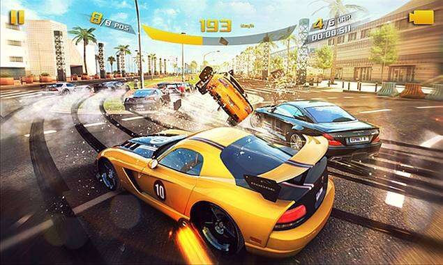

What exactly is Asphalt 8 Airborne??
Asphalt 8 Airborne is an amazing racing game. It packs all the speed and excitement of the Asphalt saga in just one tenth of its usual size, which is a real technical achievement for such an entertaining and well-made game.Asphalt 8 Airborne is like the little brother of the Asphalt franchise developed by Gameloft. It takes up only 100 MB, compared to the 1.2 GB of the previous installment, Asphalt 8. The good news is that, despite occupying 10 times less space, this game still has tons of game modes, racetracks, and vehicles, as well as the same spectacular graphics.
The game features a variety of cars from some of the most important manufacturers in the world, such as Ferrari, Lamborghini, and Aston Martin. You even have access to models like the Lamborghini Veneno or Ferrari LaFerrari. The best part, though, is that you can customize the cars by adding various improvements and changing the color whenever you want.
In addition to offering a great variety of cars, Asphalt 8 Airborne also has an impressive variety of racetracks. You can compete in locations around the world, including China, the United States, and Brazil. All the locations are recreated with great care and detail. In each track, you can also find shortcuts, jumps, and other elements that make the races more exciting.
Besides being able to compete solo in various championships and single race modes, Asphalt 8 Airborne also has a multiplayer mode so you can prove who's the best and climb the online leaderboards. In total, the game features eight different game modes.
Visually speaking, Asphalt 8 Airborne is as stunning as the rest of the series. Not only do the racetracks and vehicles have a great look, the settings are also very detailed, and the animation is seamless as long as your Android is powerful enough to handle it.
Asphalt Airborne 8
Advantages of Asphalt Airborne.
- Small apk size
- Amazing graphics
- Easy to understand